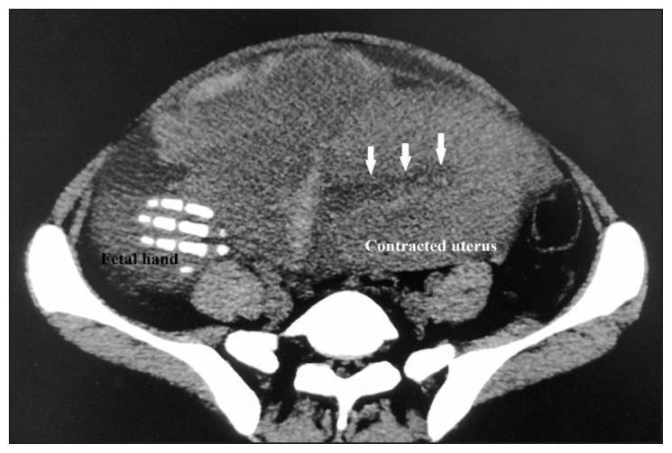
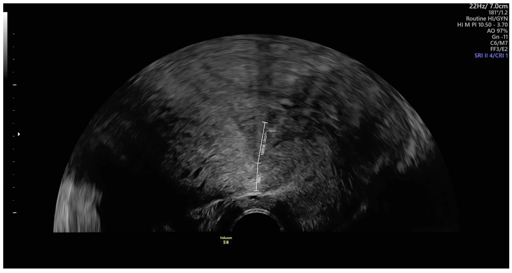
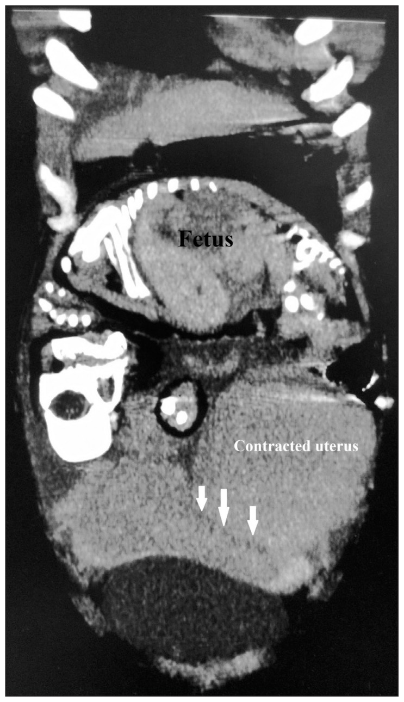
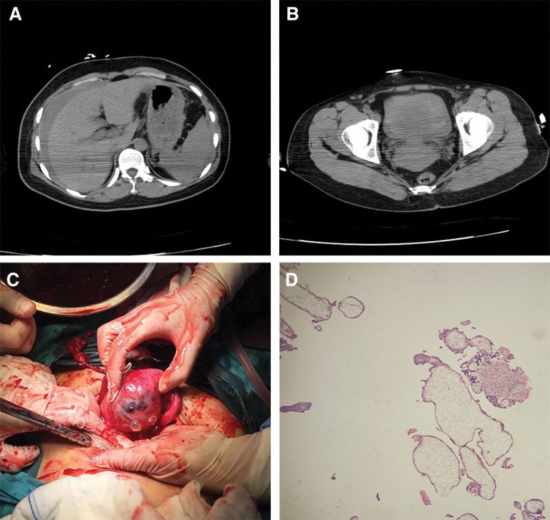
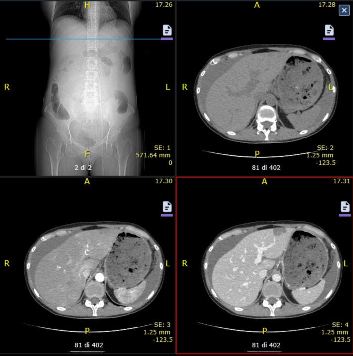

1717 — Vỡ tử cung trên sẹo mổ lấy thai: dấu tiền triệu, ngưỡng đo sẹo & chọn TOLAC / Uterine rupture on a prior cesarean scar
Tags: pattern:vo-tu-cung pattern:dich-o-bung pattern:thai-ky vung:tu-cung-phan-phu protocol:TVUS-thai protocol:CT-bung protocol:TOLAC
Mức chắc chắn (certainty): tổng hợp y văn (literature synthesis) — đoàn hệ lớn (11.947–270.329 ca TOLAC), 1 khuyến cáo FIGO 2025, nhiều ca lâm sàng có hình ảnh; không có thử nghiệm ngẫu nhiên so sánh "chụp gì trước", nên mọi con số dưới đây là kết cục quan sát.
1. Tổng quan bệnh học – cơ chế hình ảnh
- Định nghĩa tách đôi (phải nói rõ trước khi trích bất kỳ con số nào): vỡ hoàn toàn (complete rupture) = rách đủ 3 lớp nội mạc–cơ–thanh mạc, thai/bộ phận thai ra ổ bụng; nứt sẹo hay dehiscence (partial rupture) = chỉ nội mạc–cơ, thanh mạc còn nguyên, thường không có máu tự do và phát hiện tình cờ khi mổ lấy thai (J Clin Med 2025, PMC12295210). Vì vậy cùng một vấn đề mà y văn ghi 0,06% → 3,8%: chênh lệch định nghĩa + mẫu số, không phải chênh lệch chất lượng chăm sóc.
- Tần suất (số liệu gộp, ghi mẫu số): một sẹo mổ lấy thai ngang đoạn dưới → vỡ 0,3–0,7% khi thử chuyển dạ đường âm đạo (TOLAC — trial of labor after cesarean) (FIGO 2025, PMC12447697); < 0,02% khi mổ lấy thai chủ động không chuyển dạ (PMC12295210); ~0,5% TOLAC theo tổng quan (PMC12295210); dehiscence tới 3,8% (PMC12295210); tử cung không sẹo: ~1/15.000 ca sinh (PMC12295210), dải 0,4–0,6/10.000 (Cureus 2026, PMC12917422).
- Ba đoàn hệ lớn cho ba mẫu số khác nhau — đọc cùng nhau mới đúng:
- Stockholm–Gotland 11.947 ca TOLAC ≥ 37 tuần: 216 ca vỡ = 1,8% (Sci Rep 2026, PMC13087215). Con số cao gấp 3–4 lần 0,5% vì gộp cả dehiscence và vì vùng có tỷ lệ khởi phát chuyển dạ cao — đừng dùng 1,8% để tư vấn.
- Pháp, 11 trung tâm, 16 năm: 199/31.668 lượt TOLAC = 0,63% vỡ hoàn toàn, thai sinh đường âm đạo thành công 72,9% (Acta Obstet Gynecol Scand 2025, PMC11782053).
- Mỹ 2014–2021, 270.329 thai một thai có 1 sẹo mổ lấy thai: 957 ca vỡ = 0,354% (3,54/1.000) (Acta Obstet Gynecol Scand 2025, PMC11683537).
- TẠI SAO sẹo là điểm yếu (cơ học + mô bệnh): sẹo đoạn dưới là collagen xơ, gần như không có sợi cơ trơn co rút và không có màng rụng (decidua); lực căng thành tử cung tỉ lệ áp lực buồng ối × bán kính (Laplace) → cơn co càng mạnh, tử cung càng to thì lực tác động lên đúng vòng sẹo càng lớn. Mô sẹo chịu lực kéo kém hơn cơ lành, nên cơn co dồn dập + khởi phát chuyển dạ bằng prostaglandin là hai bàn đạp cộng lực.
- TẠI SAO hình ảnh thấy được (vật lý):
- Siêu âm: cơ tử cung đồng âm trung bình; sẹo là dải giảm âm mỏng ở mặt trước eo. Vỡ = mất liên tục đường viền cơ — có thể chỉ 1–3 mm, nên phải dùng đầu dò tần số cao, lát cắt đúng trục và ghi bằng mm.
- Máu trong ổ bụng trên siêu âm: máu tươi echo dày, sau đông thành khối echo hỗn hợp, sau ly giải thành dịch echo trống — cùng một lượng máu cho 3 hình ảnh khác nhau theo thời gian, không theo lượng.
- CT: máu cấp 35–70 HU (cục máu đông tới 50–70 HU), cơ tử cung ngấm thuốc 40–60 HU ở thì tĩnh mạch, xương thai > 200 HU; dịch ổ bụng quanh gan, túi cùng Douglas, rãnh cạnh đại tràng là nơi máu đọng sớm nhất. Chỗ mất liên tục cơ chỉ thấy khi cắt đúng mặt phẳng vuông góc với vòng sẹo — đây là lý do CT có thể "âm tính giả" nếu lớp cắt dày.
- MRI: cơ tử cung T2 trung bình–thấp; sẹo là dải T2 tối; vỡ = đứt dải T2 tối + máu T1 sáng (methemoglobin) ngoài thành. DWI không có vai trò — máu cấp cũng hạn chế khuếch tán, dễ đọc nhầm thành "mủ/ác tính".
- Ngưỡng đo sẹo — và giới hạn của nó (cửa định lượng quan trọng nhất): đo bề dày toàn bộ đoạn dưới (LUS — lower uterine segment) và bề dày cơ còn lại (RMT — residual myometrial thickness) ở 36–38 tuần, bàng quang nửa đầy, 3 lần đo lấy trung bình. Nghiên cứu 161 sản phụ đang chuyển dạ: LUS 2,3 mm và RMT 1,9 mm là điểm cắt tốt nhất cho khiếm khuyết thành tử cung — nhưng AUC chỉ 0,60 (KTC 51–70%) và 0,61 (52–71%), tức gần như tung đồng xu; khiếm khuyết thành gặp 25,9% (42/161), vỡ 2,5% (4/161), dehiscence 23,5% (38/161) (BMC Pregnancy Childbirth 2022, PMC9107280).
- Ngưỡng liên quan "túi thừa sẹo" (isthmocele): niche gặp 42–84% sau mổ lấy thai, khiếm khuyết lớn với RMT < 2,2 mm gặp 11–45%**; **mất > 50% bề dày cơ tại niche làm tăng nguy cơ vỡ (Geburtshilfe Frauenheilkd 2024, PMC11303011).
- Sau sinh đường âm đạo thành công, sẹo vẫn "hở": siêu âm trong vài ngày đầu sau sinh thấy đường rạch trên 90% (27/30) bằng siêu âm qua bụng, RMT trung vị 12,0 mm (IQR 8,0–19,0); khiếm khuyết ≥ 2 mm ở 63% (17/27); siêu âm đầu dò âm đạo thấy 29/29, RMT trung vị 9,9 mm (7,5–14,5) (Medicina 2026, PMC13609557). Nghĩa là "có khuyết sẹo" không đồng nghĩa "đã vỡ" — phải đọc cùng bối cảnh.
2. Mẫu hình + chẩn đoán phân biệt theo vị trí và thời điểm (Gamut)
Bốn câu hỏi theo thứ tự, đúng như khi cầm đầu dò:
- Thai còn sống không, đang ở trong hay ngoài buồng tử cung?
- Thành tử cung còn liên tục không, chỗ mất liên tục ở đâu, dài bao nhiêu mm?
- Có máu tự do trong ổ bụng không, ở đâu (quanh gan, Douglas, rãnh cạnh đại tràng)?
- Sẹo cũ là loại nào (ngang đoạn dưới / thân tử cung / sau myomectomy / sau nội soi buồng tử cung)?
Gamut theo vị trí (vị trí quyết định nguyên nhân và tiên lượng):
- Mặt trước eo tử cung (sẹo ngang đoạn dưới): thể điển hình, ~90% các ca vỡ có sẹo (PMC12917422).
- Đáy/thân tử cung: sẹo mổ lấy thai thể cổ điển (classical) — nguy cơ vỡ 1–12% (Clin Case Rep 2021, PMC8143273); sẹo sau myomectomy — nguy cơ chung 0,30% (40/13.381), nhưng 6,82% (3/44) nếu đã vào buồng tử cung so với 1,19% (4/336) khi không vào, OR 6,07 (Obstet Gynecol Int 2026, PMC13676031).
- Thành sau / góc: sau mổ lạc nội mạc sâu (DIE) hoặc sau chửa góc/sừng tử cung — vỡ không có sẹo mặt trước, dễ bị loại trừ oan vì "không có sẹo".
- Tử cung không sẹo: chuyển dạ tắc nghẽn, misoprostol tự dùng, chấn thương, dị dạng tử cung — ở nước thu nhập thấp chiếm 57% (42/74) các ca vỡ (Front Glob Womens Health 2026, PMC13438401).
- Tại vị trí bánh nhau: vỡ trên phổ nhau cài răng lược (PAS) — bánh nhau xuyên cơ làm thành tử cung mỏng < 1 mm rồi rách (bài 560, 1604).
- Cổ tử cung / eo sau morcellation: hiếm, nhưng là "vị trí mù" trên siêu âm qua bụng.
Gamut theo thời điểm:
- Trước chuyển dạ (tam cá nguyệt 2–3): thường sẹo thân tử cung, PAS, hoặc dị dạng — đau âm ỉ nhiều ngày, không có cơn co.
- Trong chuyển dạ: hay gặp nhất; CTG bất thường là dấu hiệu sớm nhất và thường duy nhất.
- Ngay sau sinh đường âm đạo: chảy máu sau sinh với tử cung co tốt — bẫy kinh điển (Cureus 2026, PMC12917422; J Med Case Rep 2026, PMC13485830).
Gợi nhớ SCAR: Scar (loại sẹo), Contraction (cơn co/khởi phát chuyển dạ), Anomaly (dị dạng, PAS, nhau bất thường), Rare (không sẹo: chấn thương, misoprostol, chửa góc).
3. Bảng so sánh phân biệt (ma trận đối chiếu)
| Thực thể (entity) | Hình ảnh điển hình (US/CT/MRI) | Chốt vào (rule-in) | Chốt loại (rule-out) | Gợi ý xác nhận |
|---|---|---|---|---|
| Vỡ hoàn toàn trên sẹo đoạn dưới | Mất liên tục cơ mặt trước eo; thai hoặc bộ phận thai ngoài buồng; tử cung co nhỏ, lệch bên; dịch ổ bụng hỗn hợp echo | Thai ngoài buồng + mất liên tục thành cơ + dịch ổ bụng — chốt ngay, không cần thêm | Tử cung còn bao quanh thai + không dịch ổ bụng → không phải vỡ | TVUS tại giường + CT khi ổn định; mổ cấp cứu |
| Nứt sẹo / dehiscence (không hoàn toàn) | Đáy sẹo < 2 mm, "cửa sổ" (window) giảm âm, không máu tự do, thai trong buồng | Phát hiện lúc mổ lấy thai: thanh mạc còn nguyên, không máu ổ bụng | Có máu tự do + thai ngoài buồng → đã là vỡ hoàn toàn | Mổ lấy thai theo kế hoạch; ghi mô tả mm |
| Vỡ ở tử cung KHÔNG sẹo | Rách góc/thành sau/đáy, thành cơ xa sẹo vẫn đều; bối cảnh chuyển dạ tắc nghẽn hoặc misoprostol | Không tiền sử mổ tử cung + cơn co dồn dập + thai ngoài buồng | Có sẹo mặt trước + mất liên tục đúng sẹo = vỡ sẹo | Hỏi kỹ tiền sử nạo/hút, nội soi buồng tử cung, chấn thương |
| Vỡ do PAS | Bánh nhau xuyên cơ, mất clear zone, hồ máu, mạch bắc cầu, cơ < 1 mm, vỡ đúng chỗ bánh nhau | Bánh nhau + mất clear zone + mạch bắc cầu + vỡ tại vị trí bánh nhau | Bánh nhau bình thường + vỡ ở đáy không liên quan bánh nhau | MRI khi mặt phẳng sau khó; ê-kíp PAS + mổ có chuẩn bị |
| Nhau bong non (abruptio) | Bánh nhau dày, khối máu sau bánh nhau, tử cung thấm máu (Couvelaire), thai suy | Tụ máu sau bánh nhau + tím thành cơ + CTG bất thường | Thành cơ liên tục, không mất liên tục + không có khối sau bánh nhau | TVUS; theo dõi CTG; fibrinogen |
| Nhau tiền đạo chảy máu | Bánh nhau che lỗ trong, không đau, tử cung mềm, thành cơ liên tục | Máu âm đạo không đau + bánh nhau che os | Mất liên tục thành + dịch ổ bụng → không phải chỉ previa | TVUS đầu dò âm đạo; đo mép nhau tới os tính bằng mm |
| Vỡ mạch máu khác (phình lách, chửa ngoài tử cung vỡ, vỡ gan) | Dịch ổ bụng nhiều nhưng tử cung nguyên vẹn; thấy túi phình hoặc túi thai ngoài | Tử cung nguyên + nguồn chảy thấy được ngoài tử cung | Thai trong buồng + mất liên tục thành cơ | CT có cản quang; DSA khi nghi phình |
| U xơ thoái triển đỏ / xoắn tử cung | Đau khu trú đúng u, sốt nhẹ, không dịch ổ bụng, không mất liên tục thành | Viền tăng T1 quanh u + khối xơ đặc trưng + không dịch | Dịch ổ bụng + mất liên tục thành → loại | MRI; theo dõi giảm đau |
| Bụng cấp không sản khoa (ruột thừa, sỏi niệu quản) | Tử cung bình thường, không máu ổ bụng, ổ bệnh ngoài tử cung | Ruột thừa > 7 mm + viêm mô quanh; sỏi + ứ nước thận | Dịch máu + thai ngoài buồng → loại | MRI không cản từ (bài 1817), siêu âm bụng |
Ghi chú phản biện: bảng này xếp theo thứ tự cần loại trừ trong 5 phút đầu, không theo tần suất. "Chốt loại" mạnh nhất là tử cung còn nguyên + không dịch ổ bụng; ngược lại "sẹo mỏng" một mình không chốt được gì (xem mục 5).
Dấu hiệu chốt trên từng phương thức (đọc đúng chuỗi)
- Siêu âm qua bụng: thai/bộ phận thai ngoài buồng + tử cung rỗng co nhỏ + dịch quanh gan và Douglas. Cạm bẫy: tử cung rỗng co nhỏ bị đọc thành "nhau tiền đạo" — đúng như tiêu đề ca Ann Saudi Med 2016 (PMC6074206).
- Siêu âm đầu dò âm đạo: đo RMT và LUS tại sẹo; tìm mất liên tục ≥ 2 mm và "cửa sổ" — nhưng nhớ AUC ~0,6.
- CT: (1) dịch tự do quanh gan/lách/rãnh cạnh đại tràng; (2) đứt đường viền cơ ở mặt phẳng vuông góc vòng sẹo; (3) bộ phận thai ngoài tử cung (xương thai > 200 HU); (4) tử cung co nhỏ, đẩy lệch.
- MRI: đứt dải T2 tối của cơ + máu T1 sáng ngoài thành; hữu ích khi siêu âm mơ hồ ở thai phụ ổn định.

Nguồn: Ann Saudi Med 2016, Fig. 3 (PMC6074206), CC BY-NC-ND 4.0 — dùng nguyên bản, không crop/ghép.4. Protocol chụp + phân loại + quyết định
Nguyên tắc số 1: hình ảnh không được làm chậm mổ. Nếu thai còn sống + bụng cấp + CTG bất thường, mổ lấy thai loại 1 (quyết định → mổ ≤ 30 phút) song song với hồi sức; siêu âm chỉ để trả lời 4 câu hỏi, không phải để "xác nhận".
| Bước | Việc làm | Ngưỡng/thông số cụ thể |
|---|---|---|
| 1 | Đánh giá lâm sàng + CTG | Đau sẹo, mất trương lực/ngừng cơn co, nhịp tim thai giảm sâu kéo dài hoặc mất dao động; HA, mạch, Hb |
| 2 | Siêu âm tại giường (≤ 5 phút) | 4 câu hỏi mục 2; dịch Morison/Douglas; đo RMT (mm) nếu thấy sẹo |
| 3 | Quyết định mổ | Thai sống + nghi vỡ = mổ ngay, không chờ CT/MRI |
| 4 | CT bụng–chậu có cản quang | Khi siêu âm không kết luận, thai đã chết, hoặc cần loại trừ nguyên nhân khác; liều thai ~25 mGy cho 1 thì bụng–chậu, < 50 mGy nên không có ngưỡng cấm (Diagnostics 2024, PMC10855036) |
| 5 | MRI bụng–chậu | Thai phụ ổn định, siêu âm mơ hồ, nghi nguyên nhân không sản khoa (bài 1817) |
| 6 | Xét nghiệm song song | Nhóm máu + cross-match 2–4 đơn vị, Hb/Hct, fibrinogen, lactat, khí máu |
Đo sẹo đúng kỹ thuật (khi chưa có biến cố):
- Thời điểm 36–38 tuần, bàng quang nửa đầy, đầu dò đường bụng cong tần số cao hoặc đầu dò âm đạo; đo vuông góc với vòng sẹo, 3 lần, lấy trung bình, ghi cả LUS và RMT bằng mm.
- Điểm cắt tham chiếu: LUS 2,3 mm / RMT 1,9 mm (PMC9107280) — dùng để hội chẩn, không để tuyên bố "an toàn".

Nguồn: Medicina 2026, Fig. 2 (PMC13609557), CC BY 4.0. Ảnh cho thấy "khuyết sẹo" tồn tại ngay cả sau một ca sinh đường âm đạo thành công — khuyết sẹo không đồng nghĩa với vỡ.Không có hệ phân độ RADS cho vỡ tử cung; dùng 2 hệ phân loại:
- Hoàn toàn vs không hoàn toàn (complete vs partial) — quyết định thái độ mổ và tiên lượng thai: ở 112 ca Cologne, vỡ hoàn toàn gắn với mổ lâu hơn, băng huyết, truyền máu, chuyển ICU, toan nặng, Apgar thấp, chuyển NICU, cần hồi sức sơ sinh đều cao hơn có ý nghĩa (p = 0,003 đến < 0,001) (PMC12295210).
- Bảng tiêu chí chọn TOLAC (FIGO 2025, PMC12447697): thai đường âm đạo thành công 60–80%; lợi thế nhất khi đã từng sinh đường âm đạo, chỉ định mổ lần trước không tái diễn, khoảng cách 2 lần sinh ≥ 18 tháng, BMI < 30 kg/m², chuyển dạ tự nhiên.
Các yếu tố điều chỉnh nguy cơ (số liệu để tư vấn, không để "chấm điểm"):
- Khởi phát chuyển dạ: aOR 1,63 (1,20–2,22) so với chuyển dạ tự nhiên; prostaglandin aOR 2,58 (1,77–3,74); bóng chèn (balloon) aOR 0,99 (0,61–1,61) — không tăng (PMC13087215).
- Oxytocin (meta 14 nghiên cứu/48.457 ca TOLAC): vỡ 0,7% khi chuyển dạ tự nhiên vs 2,2% khi khởi phát; 1,4% khi dùng oxytocin vs 0,5% khi không (BMC Pregnancy Childbirth 2021, PMC7786988).
- Tiền sử sinh đường âm đạo: aOR 0,30 (0,2–0,5) — yếu tố bảo vệ mạnh nhất; Bishop < 6 → aOR 1,8; ngừng mở cổ ≥ 1 giờ → aOR 1,8 (PMC11782053).
- Khoảng cách thai < 18 tháng: aOR 1,55 (1,19–2,02); tăng co (augmentation) aOR 1,94 (1,70–2,21) (PMC11683537).
- Đa sản (≥ 5 lần sinh): KHÔNG phải yếu tố nguy cơ — vỡ 0,2% vs 0,6% vs 0,9% (đa sản / 3–4 lần / 2 lần), aOR 0,16 (Pregnancy 2026, PMC13344267). Đây là phản biện trực tiếp với định kiến "đẻ nhiều thì dễ vỡ".
flowchart TD
A[Dau bung cap o thai phu co seo mo lay thai] --> B{Thai con song va CTG bat thuong}
B -->|Co| C[Mo lay thai loai 1 trong 30 phut, hoi suc song song]
B -->|Khong| D[Sieu am tai giuong trong 5 phut]
D --> E{Thai con trong buong tu cung}
E -->|Khong| F[Chan doan vo tu cung, mo ngay]
E -->|Co| G{Thanh co con lien tuc}
G -->|Mat lien tuc| F
G -->|Lien tuc| H{Co dich tu do trong o bung}
H -->|Co| I[CT bung chau co can quang khi huyet dong on dinh]
H -->|Khong| J[Do LUS va RMT bang mm, theo doi sat]
I --> K{Thay mat lien tuc thanh co hoac bo phan thai ngoai}
K -->|Co| F
K -->|Khong| L[Tim nguyen nhan khac va xu tri theo nguyen nhan]
J --> M[Tranh khoi phat chuyen da bang prostaglandin, hoi chan mo chu dong]
5. Biến thể bình thường và cạm bẫy
- "Khuyết sẹo" là biến thể thường gặp, không phải bệnh: sau một ca sinh đường âm đạo thành công, 63% vẫn còn khiếm khuyết ≥ 2 mm và RMT trung vị 9,9 mm trên siêu âm đầu dò âm đạo (PMC13609557). Đừng biến một khiếm khuyết không triệu chứng thành chỉ định mổ.
- Vỡ không triệu chứng: 22,7% (5/22) ca vỡ hoàn toàn không đau — dấu hiệu duy nhất là CTG và/hoặc thiếu máu (J Pers Med 2026, PMC13301781). Ngược lại, đau bụng chỉ có 72,7%.
- "Cửa sổ" thấy lúc mổ lấy thai lại không phải vỡ: màng bụng còn nguyên + không máu tự do = dehiscence, không phải vỡ hoàn toàn; đừng ghi "vỡ tử cung" vào bệnh án khi chưa có bằng chứng thủng thanh mạc.
- Bề dày sẹo không phải giấy thông hành: AUC 0,60–0,61 (PMC9107280); một sẹo 3,5 mm vẫn có thể vỡ và một sẹo 1,5 mm vẫn sinh đường âm đạo an toàn. Dùng số đo để hội chẩn, không để cam kết.
- Tử cung co nhỏ bị đọc thành "nhau tiền đạo": trên siêu âm, tử cung rỗng co chặt trông như khối cơ dày bất thường; chốt lại bằng dịch ổ bụng + thai ngoài buồng (PMC6074206).
- Vỡ biểu hiện SAU sinh: chảy máu sau sinh với tử cung co tốt vẫn có thể là vỡ; đừng chỉ quy cho đờ tử cung (PMC12917422, PMC13485830).
- Nhiều lần mổ lấy thai không tuyến tính: trong 112 ca Cologne, > 2 lần mổ lấy thai có OR 0,66 (0,13–3,22) — không tăng; đừng tư vấn "càng nhiều sẹo càng nguy hiểm" như một quy luật.
- Khoảng thời gian vỡ → lấy thai không quyết định tất cả: có ca vỡ trên PAS, khoảng cách 19,5 giờ, trẻ sống (Cureus 2024, PMC11549534) — ngược lại J Pers Med 2026 thấy khoảng cách triệu chứng → sinh liên quan kết cục xấu (p = 0,032). Kết luận đúng: rút ngắn thời gian là tốt, nhưng không dùng một con số thời gian để tiên lượng cá nhân.
- Bỏ sót vì "gán đau cơ–xương": ca MRI 2019 (PMC6662414) đau bụng 3 ngày được điều trị như đau cơ; khi siêu âm thấy dịch ngoài tử cung mới chụp MRI. Ở thai phụ có sẹo, đau bụng mới = nghi vỡ cho tới khi chứng minh ngược lại.
- Sai lầm hệ thống: đợi CT ở bệnh nhân đang sốc. Trong vỡ tử cung, thời gian là yếu tố duy nhất kiểm soát được.
6. Tự lượng giá — Blind Quiz
Ca 1 — Thai phụ 24 tuổi, thai đủ tháng, đau bụng, siêu âm thấy tử cung rỗng và co nhỏ.
- Gợi ý lâm sàng: thai đủ tháng, không nghe được tim thai, bụng chướng.
- Câu hỏi: Cấu trúc nào nằm ngoài buồng tử cung? Mũi tên chỉ vào đâu? Ba chẩn đoán phân biệt và dấu hiệu nào chốt?
Bấm để hiện đáp án (findings + chẩn đoán)
- Dấu hiệu: bàn tay thai nhi (chuỗi xương nhỏ, > 200 HU) nằm trong ổ bụng ngoài tử cung; tử cung co nhỏ, đẩy lệch sang phải; mũi tên chỉ chỗ mất liên tục thành tử cung; ổ bụng nhiều dịch.
- Chẩn đoán: vỡ tử cung hoàn toàn — thai và bộ phận thai ra ổ bụng.
- Ba phân biệt: nhau bong non (thành cơ liên tục), nhau tiền đạo (thai trong buồng), vỡ mạch máu khác (tử cung nguyên).
- Vì sao chốt: xương thai ngoài buồng tử cung là bằng chứng không thể giải thích cách khác — thành tử cung đã mất tính toàn vẹn.
- Nguồn ảnh: Ann Saudi Med 2016, Fig. 3 (PMC6074206), CC BY-NC-ND 4.0.
- Phản biện: siêu âm ban đầu của chính ca này bị đọc nhầm thành nhau tiền đạo vì tử cung co nhỏ — cho thấy giá trị của việc tìm dịch ổ bụng trước khi kết luận.
Ca 1 (tiếp) — mặt phẳng tràng (coronal) cùng ca, xác nhận toàn cảnh:

Bấm để hiện đáp án
- Dấu hiệu: toàn bộ thai nhi nằm trong ổ bụng, phía trên và tách khỏi tử cung co nhỏ; mũi tên chỉ chỗ mất liên tục thành; dịch tự do quanh gan.
- Giá trị của mặt phẳng tràng: chứng minh toàn bộ thai ngoài buồng — loại bỏ khả năng "thoát vị một phần" hay ảo ảnh mặt phẳng ngang.
- Nguồn ảnh: Ann Saudi Med 2016, Fig. 4 (PMC6074206), CC BY-NC-ND 4.0.
Ca 2 — Thai phụ đau bụng cấp, CT bụng–chậu có cản quang: dịch quanh gan rất nhiều.

- Gợi ý lâm sàng: đau bụng dữ dội, choáng, thai không cử động.
- Câu hỏi: Dịch trong ổ bụng là dịch gì? Ô nào chứng minh chẩn đoán? Nếu chỉ có ô A–B thì có kết luận được không?
Bấm để hiện đáp án (findings + chẩn đoán)
- Dấu hiệu: (A) dịch tự do quanh gan và lách số lượng lớn — đậm độ dịch 35–60 HU, tức máu; (B) tử cung to, khó thấy chỗ vỡ trên lát đơn độc; (C) thai/túi thai thò ra ngoài thành tử cung khi mổ; (D) mô bệnh học bánh nhau.
- Chẩn đoán: vỡ tử cung (trong ca gốc là tử cung không sẹo, kèm nhau cài răng lược trên mô bệnh).
- Trả lời câu hỏi then chốt: chỉ ô A–B KHÔNG đủ — chẩn đoán nằm ở mất liên tục thành + thai ra ngoài, mà lát cắt ngang đơn độc có thể bỏ sót. Phải dựng đa bình diện và đọc cả ổ bụng, không chỉ đọc tử cung.
- Nguồn ảnh: Medicine 2023, Fig. 2 (PMC10270498), CC BY 4.0.
Ca 3 — Thai phụ có tiền sử mổ bóc u xơ, đau bụng, CT bụng–chậu có cản quang.

- Gợi ý lâm sàng: đau bụng tăng dần, không có sẹo mổ lấy thai; trước đó vài tháng có mổ bóc u xơ.
- Câu hỏi: Dịch ở đâu, dày bao nhiêu? Vì sao "không có sẹo mổ lấy thai" không loại trừ vỡ tử cung?
Bấm để hiện đáp án (findings + chẩn đoán)
- Dấu hiệu: dịch tự do quanh gan dày ~3 cm, hạ sườn trái ~2 cm; các lát cắt cho thấy dịch đậm độ máu, không thấy rõ chỗ vỡ trên CT.
- Chẩn đoán: vỡ tử cung sau mổ bóc u xơ (myomectomy) — mổ thấy vỡ 10 cm ở đáy tử cung, thành cơ đứt tới buồng tử cung.
- Trả lời: nguy cơ vỡ sau myomectomy 0,30% (40/13.381), nhưng 6,82% nếu lần mổ đã vào buồng tử cung so với 1,19% khi không vào (OR 6,07) (PMC13676031) — nên luôn hỏi tiền sử mổ tử cung, không chỉ mổ lấy thai.
- Nguồn ảnh: Int J Gynaecol Obstet 2026, Fig. 1 (PMC12988390), CC BY 4.0.
- Phản biện: CT không thấy chỗ vỡ ở ca này — một lần nữa cho thấy dịch máu ổ bụng ở thai phụ là dấu hiệu chỉ điểm, còn chỗ rách có thể phải mổ mới xác định.
Bài liên quan chéo
- 500 – Tổng quan Hệ Vú & Sản Phụ khoa
- 1604 – Thai kỳ sau điều trị chửa ở sẹo mổ lấy thai: tái phát, PAS & kết cục sinh sản
- 552 – Chửa ngoài tử cung ở sẹo mổ lấy thai & chửa ở góc
- 560 – Nhau cài răng lược (PAS) cấp cứu sản
- 1640 – Xoắn tử cung trong thai kỳ
- 1631 – Thai tiếp tục sau chửa ở sẹo mổ lấy thai
- 553 – Đảo ngược tử cung do sinh
- 1817 – Đau bụng cấp ở thai phụ: protocol MRI không cản từ
Ảnh
- Tên file:
1717_vo-tu-cung_CT-axial_PMC6074206.jpg,1717_vo-tu-cung_CT-coronal_PMC6074206.jpg,1717_vo-tu-cung_CT_PMC10270498.jpg,1717_vo-tu-cung_CT_PMC12988390.jpg,1717_seo-tu-cung_TVS_PMC13609557.jpg. - Nguồn + giấy phép từng ảnh trong
images/CREDITS.md. Ảnh CC BY-NC-ND giữ nguyên bản, không crop/ghép; ảnh CC BY dùng được nhưng vẫn giữ nguyên bố cục gốc. - Không tải ảnh nào từ nguồn cấm hoặc giấy phép mơ hồ.
Không dùng để chẩn đoán độc lập khi chưa có người hướng dẫn.